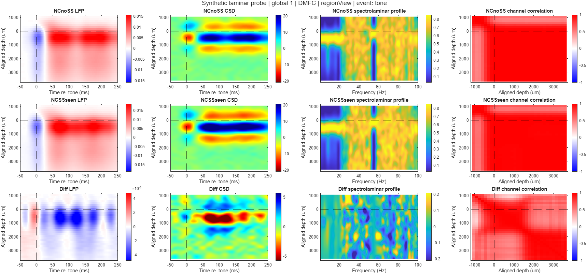

MATLAB tools for event-aligned LFP, current-source density (CSD), spectrolaminar PSD, physical-depth alignment, session diagnostics, group plots, and trial/patch statistics. Main processing and statistics are distributed together because they share the +laminar helpers.
Quick Start: One Synthetic Probe#
Requires MATLAB with Signal Processing Toolbox and Statistics and Machine Learning Toolbox. The publishing example is validated on R2025b; older releases are not certified. No experimental recording or external dataset is required.
From the downloaded repository folder:
addpath(pwd)
addpath(fullfile(pwd,'examples','synthetic_probe'))
report = run_example;
The example reads one bundled raw MAT file containing a generated 32-channel, 150-um DMFC-style probe, 32 trials, two conditions, event times, trial regressors, and alignment metadata. It produces full-probe and aligned diagnostics, aligned CSD panels, and a single-session mean summary under outputs/synthetic_demo/. It also compares numerical maps against the bundled reference output.

This is simulated data, not an experimental result. Its analytic signals illustrate layered evoked responses and depth-dependent spectral bands. No real samples, real session names, or fitted subject parameters are included. See example details (companion document available on request) for generation and limitations.
Grid Views#
Grid panels can show cached per-probe channel correlations, regional or full-32 ACC signals with sulcus/alignment markers, and an optional descriptive cell correlation mean. Select one site or an inclusive rectangle using cfg.grid.filter. See the grid-coordinate section in USER_GUIDE.md (companion document available on request) for new-run settings and cached-only revision examples. No signal recomputation is needed.
Documentation#
| Document | Purpose |
|---|---|
| Example (companion document available on request) | Input schema, generated output, reproduction |
| User guide (companion document available on request) | Main pipeline options, raw/precomputed modes, ACC/DMFC, revisions, grids |
| Main technical guide (companion document available on request) | Computation, data contracts, code relationships |
| Statistics user guide (companion document available on request) | Hypothesis branches, ANOVA and plot-only revision examples |
| Statistics technical guide (companion document available on request) | Algorithms, schemas, interpretation and current limits |
| Validation (companion document available on request) | Test commands and release verification status |
Advanced example scripts contain clearly marked path/to/... placeholders for user-supplied data. Edit those before running the advanced examples. The bundled example uses repository-relative paths and writes only ignored generated outputs.
Tests#
addpath(pwd)
addpath('tests')
addpath('statistics')
addpath(fullfile('statistics','tests'))
test_bundled_example
test_pipeline
test_statistics_module
The full suites generate temporary synthetic inputs/figures and can take several minutes. Expected missing-metadata warnings are part of failure-path tests. Numerical tests compare arrays, not platform-dependent PNG bytes.
Repository Contents and Data Policy#
Only source, tests, documentation, one synthetic input MAT, one compact numerical reference MAT and four corresponding PNGs are tracked. Generated output folders, FIGs, epoch caches, local recordings, spreadsheets, autosaves and archives are ignored. No original local output directory is included.
License selection is undecided. No open-source license is granted by this repository at this time. See provenance and licensing notes (companion document available on request).
Statistics and Revisions#
After run_example:
addpath(fullfile(pwd,'statistics'))
example_statistics_run
This exercises trial-wise LFP/CSD/PSD tests and patch ANOVA on synthetic trials. There is only one probe: direct-grand statistical inference needs at least two independent probes, so its significance maps will be empty. Do not duplicate the single probe to create artificial group sample size. Multi-probe behavior is covered by the synthetic tests.
Redraw results without repeating signal calculations or tests:
folder = fullfile(pwd,'outputs','synthetic_demo','statistics');
options = struct('figureSets',{{'probeSpecific','overlay'}}, ...
'branches',{{'difference'}},'metrics',{{'CSD'}});
revise_statistical_visualizations(folder,'CSD_review',options);
For main-pipeline plots, use main_revise_visualizations.m. For changed alignment, use main_revise_alignment.m. Extension/exclusion examples require your own additional/multi-probe data; only one example input is distributed.
Grid Display Controls#
For equal visual grid cells with minimal padding, choose spacingMode='uniform'. cellSize=[] auto-fits the largest session group and label; [width height] is a manual override. Coordinate values remain labels, not distance ratios. See GRID_PRESENTATION.md for cellPadding/cellLabelHeight and compatibility details.
Optional spatial cell dividers: plotOverrides.grid.showGridLines=true, with gridLineColor, gridLineWidth and gridLineStyle. Independent of empty text, ticks and joined-session separators; see GRID_PRESENTATION.md for interactions.
Full-lattice grid display: latticeSpacing=[dx dy] defines coordinate-unit steps; coordinateScale defines pixels per unit. showEmptyCells controls existing empty text only, without removing lattice geometry. See GRID_PRESENTATION.md.
For edge-to-edge session strips within each grid site, set plotOverrides.grid.sessionLayout='joined' and individualCellColumns=[] (automatic maximum) or a manual integer. plotOverrides.timeWindow applies to each LFP/CSD panel. See GRID_PRESENTATION.md for separators, scaling and colorbar behavior.
Coordinate Layouts, Detail Pages and PDF Export#
Grid strict/coordinate mode now uses actual coordinate values on BOTH axes and a common pixel scale: a 1-unit gap is twice a 0.5-unit gap. compressed mode preserves shared rows/columns while reducing skipped intervals. Session slots retain the same pixel size in sparse and crowded cells; occupied boxes adapt to session count. Optional detailPages exports overlapping cached spatial windows. plotOverrides.exportFormats={'fig','png','pdf'} adds vector PDF text/ lines alongside the usual outputs, also for statistical/ANOVA revisions. See GRID_PRESENTATION.md for full settings, tradeoffs and examples.
Use plotOverrides.grid.swapXY=true in cached revisions (or cfg.grid.swapXY=true in new runs) to exchange horizontal/vertical grid coordinates. Filters still use original coordinates. See GRID_PRESENTATION.md for output metadata details.
Grid overview decoration/layout controls (hidden colorbars, legends/ticks, uniform enlarged panels, and empty-cell suppression with spatial gaps) are documented in GRID_PRESENTATION.md (companion document available on request).
Reference-Line Styles#
Cached plot revisions accept plotOverrides.indicators.alignment, .sulcus and .exclusion with color (RGB), lineWidth, lineStyle, visible and optional views. Unsupported markers warn and are not fabricated; regional/statistical views have no common sulcus. See Reference Indicator Styling (companion document available on request) for main/statistical examples, view selectors, warning behavior and implementation.